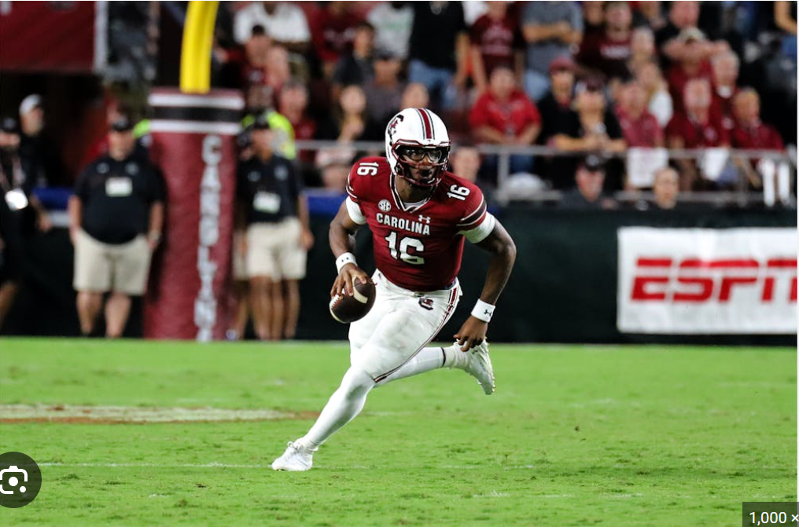
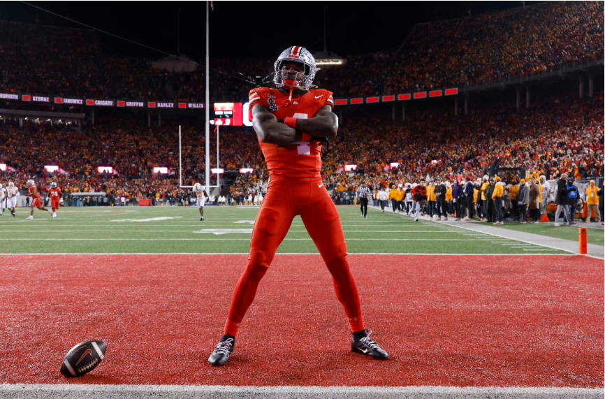

Our Picks
Below you will find one dark horse and one favorite that the Elites of College Football love to take home the Heisman Trophy.
LaNorris Sellers
- As a sophomore Sellers led a South Carolina team, picked to finish last in the SEC, to an amazing 9-4 almost making the playoffs.
- 2024 Season Stats
- 2,274 passing yards and 17 passing touchdowns.
- 655 rushing yards and 7 rushing touchdowns.
- The dual-threat quarterback, nicknamed “Superman”, is definitely a dark horse for the Heisman Trophy.

Jeremiah Smith
- He was a True Freshman last season and lived up to the hype surrounding his name.
- Big Ten Freshman of the Year
- Wide Receiver of the Year
- National Champion
- Only dropped two passes last season.
